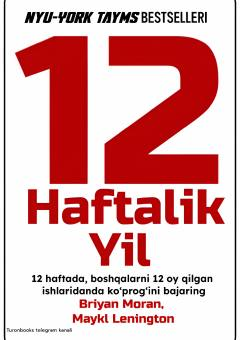

1HYilni o'n ikki haftada rejalashtirib, yuqori natijalarga erishish bo'yicha amaliy qo'llanma.
Ushbu kitob yilni 12 haftalik davrlarga bo'lib, qisqa muddat ichida yuqori natijalarga erishish va samaradorlikni oshirish sirlarini ochib beradi. Mualliflar maqsad qo'yish, rejalashtirish va harakat qilish bo' yicha amaliy tavsiyalar taqdim etadi.